Jason Duval — protagonist
"Jason wants an easy life, but things just keep getting harder." Raised among grifters and crooks, ex-Army, now working for drug runners in the Leonida Keys and living rent-free in Brian Heder's property — in exchange for shakedown work. Full breakdown in our Jason & Lucia deep dive.
Lucia Caminos — protagonist
Taught to fight by her father "as soon as she could walk," Lucia did time in Leonida Penitentiary for protecting her family. Fresh out and playing it smart, she wants the life her mom dreamed of back in Liberty City — and she's done waiting for it to arrive on its own.
Cal Hampton — the conspiracy theorist
"What if everything on the internet was true?" Jason's friend and a fellow Heder associate, Cal stays home snooping on Coast Guard radio with beers and private browser tabs. Rockstar calls him "the low tide of America — and happy there."
Boobie Ike — the mogul
A Vice City street legend who turned his past into a legitimate empire — real estate, a strip club, a recording studio. Per his official bio, "the club money pay for the studio, and the drug money pay for it all." His real investment: Only Raw Records, with Dre'Quan.
Dre'Quan Priest — the music man
"Always more of a hustler than a gangster." Dre'Quan dealt on the streets to fund a music dream. Now running Only Raw Records with Boobie's backing and the Real Dimez signed, he's aiming past strip-club bookings toward the whole Vice City scene.
Real Dimez — the viral duo
Bae-Luxe and Roxy — friends since high school who turned shaking down dealers into rap money and a relentless social feed. An early hit with rapper DWNPLY put them on the map; now they're signed to Only Raw Records hoping lightning strikes twice.
Raul Bautista — the bank robber
"Experience counts." A seasoned bank robber with confidence, charm and cunning, always recruiting talent willing to take big risks for bigger rewards. His official bio warns his recklessness "raises the stakes with every score" — heist crew material, and likely trouble.
Brian Heder — the old smuggler
A drug runner from the golden age of Keys smuggling, still moving product through his boat yard with his third wife, Lori. Jason's landlord and first employer — "looks like a Leonida beach bum, moves like a great white shark," per Rockstar.
The cast in pictures
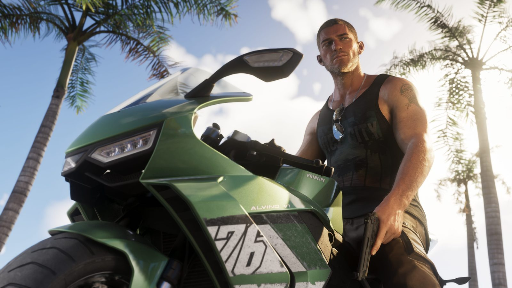
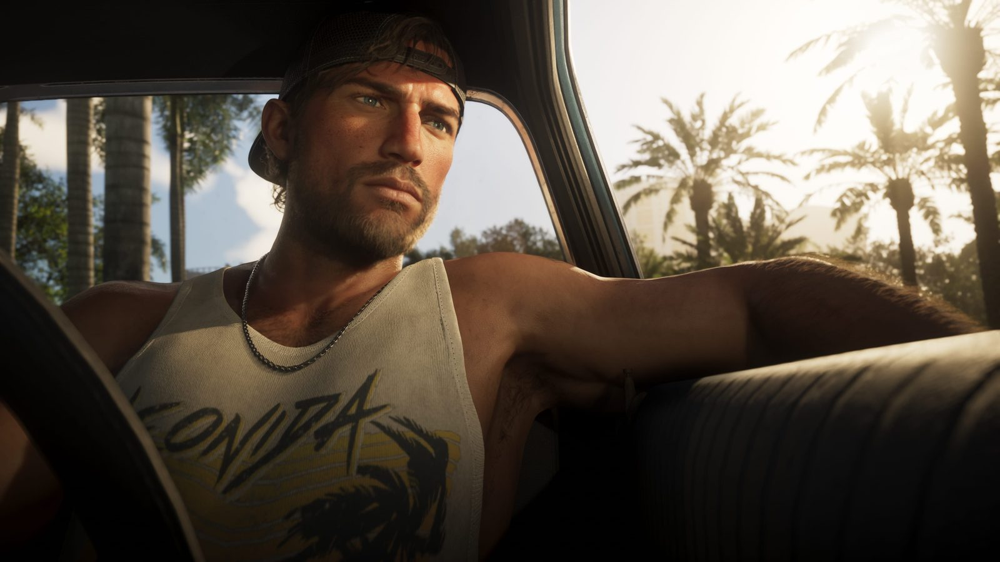
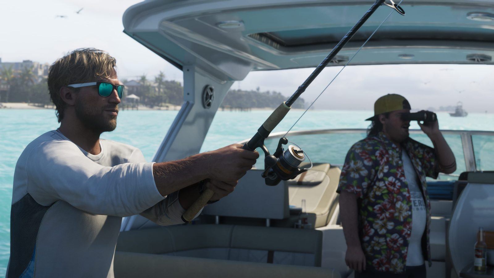
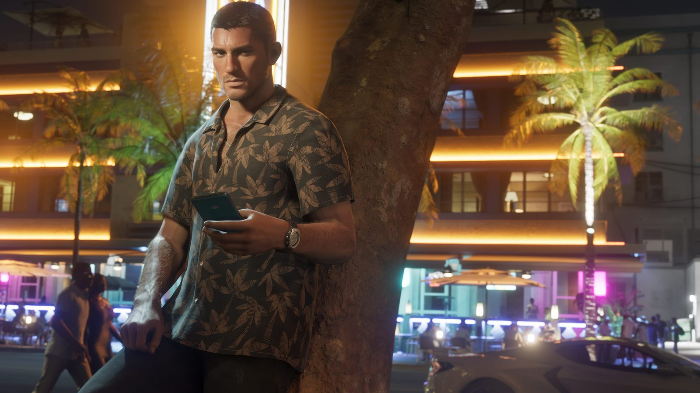
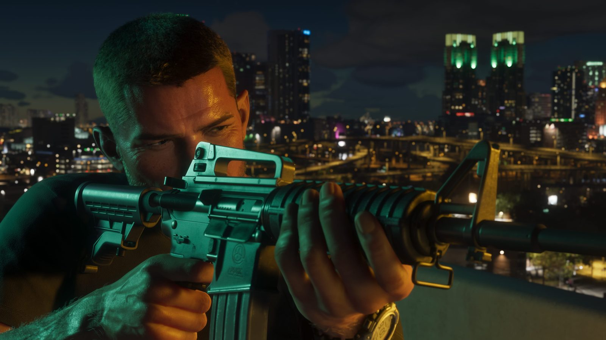
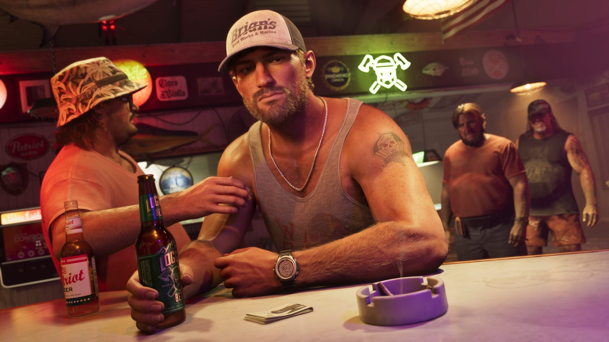
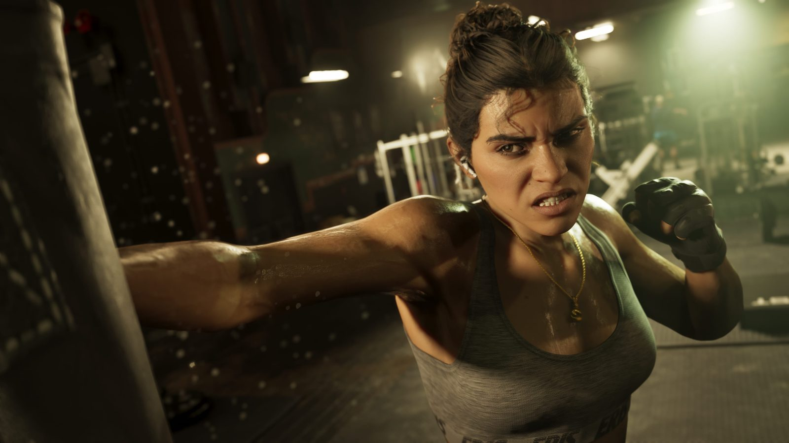
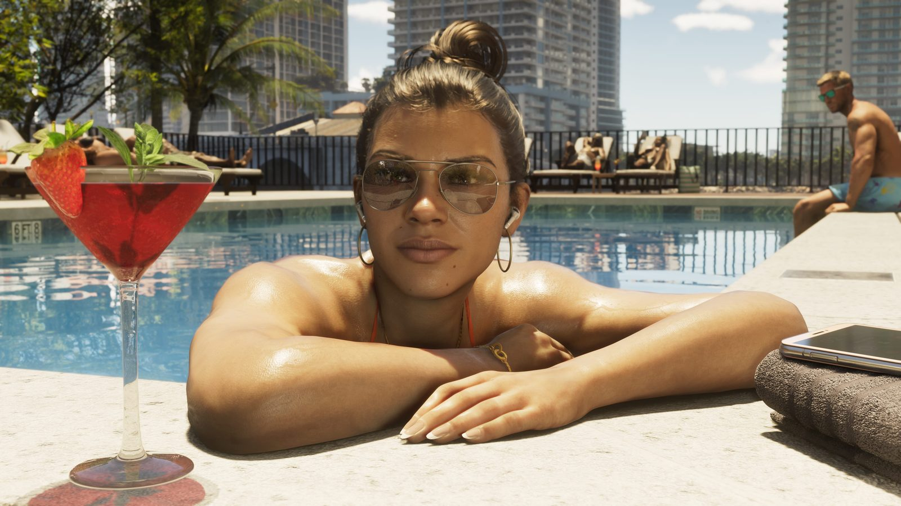
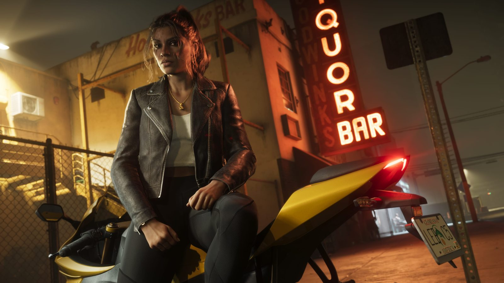
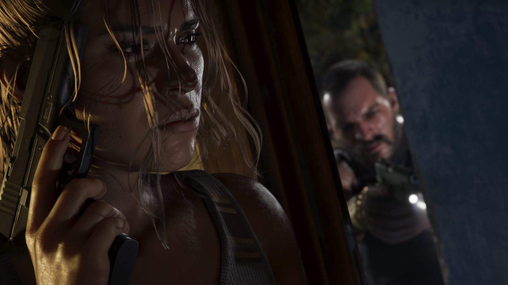
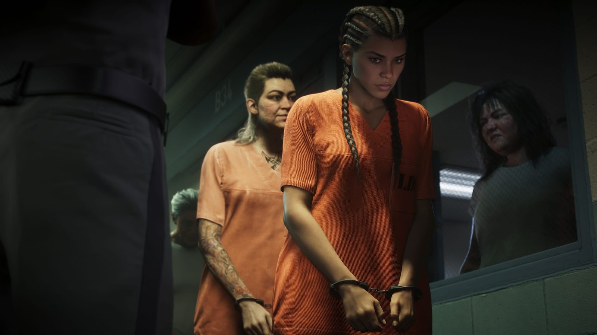
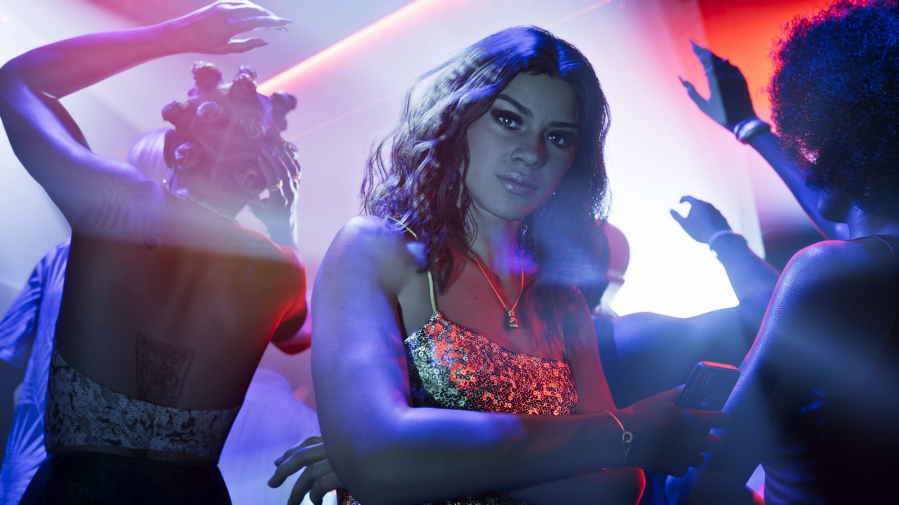
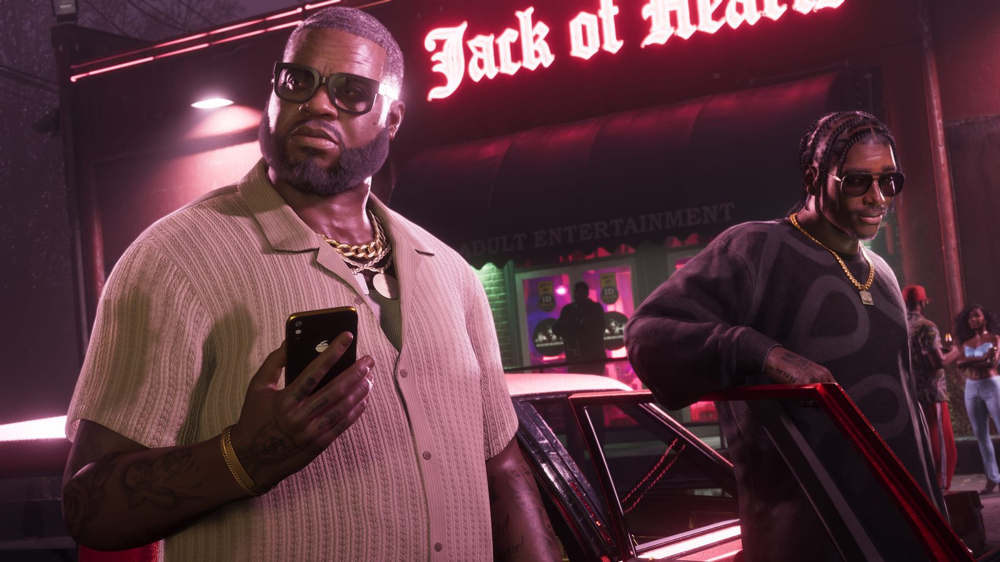
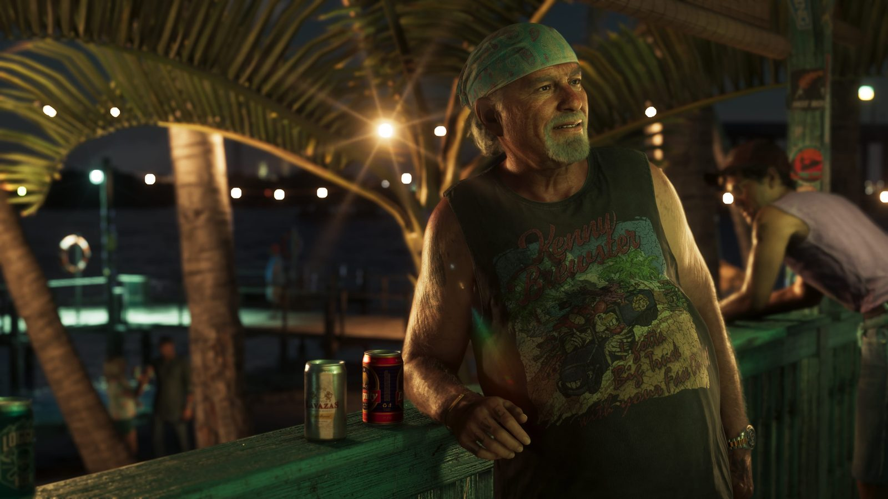
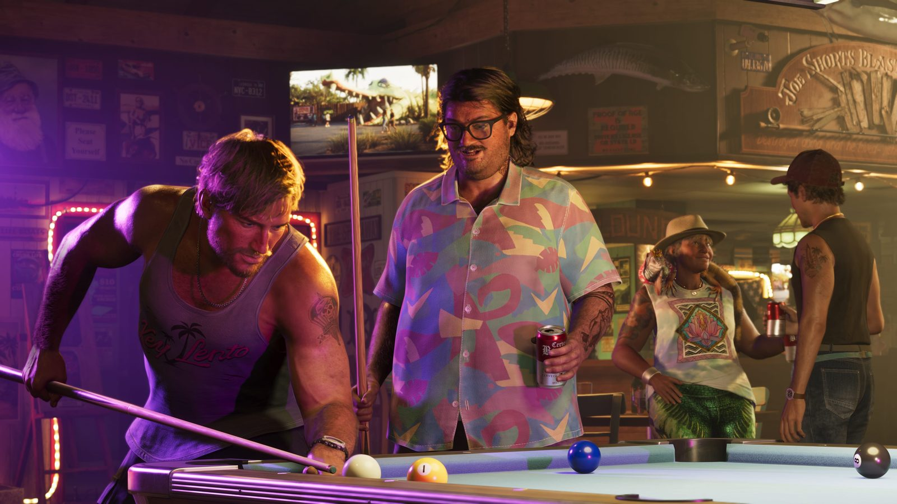
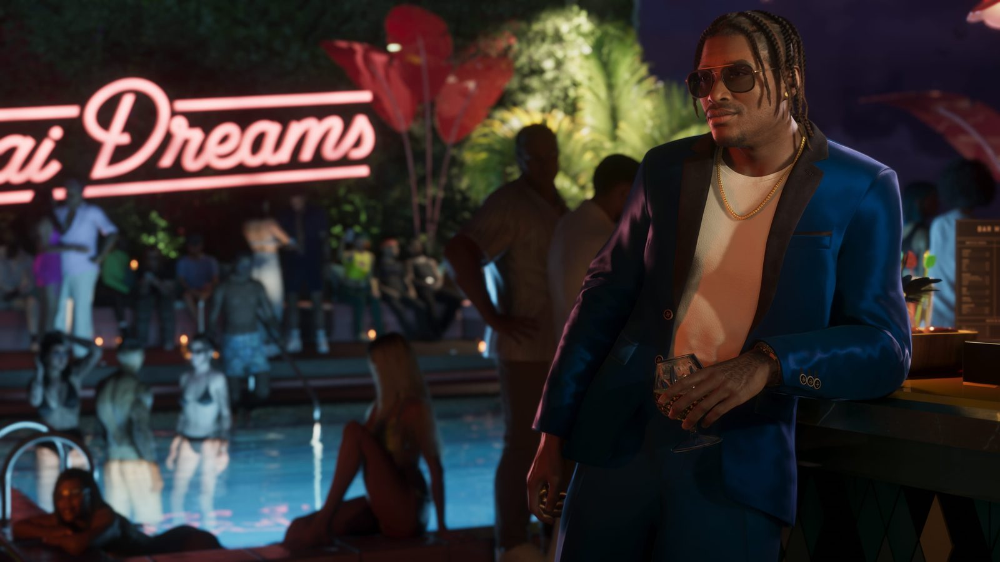
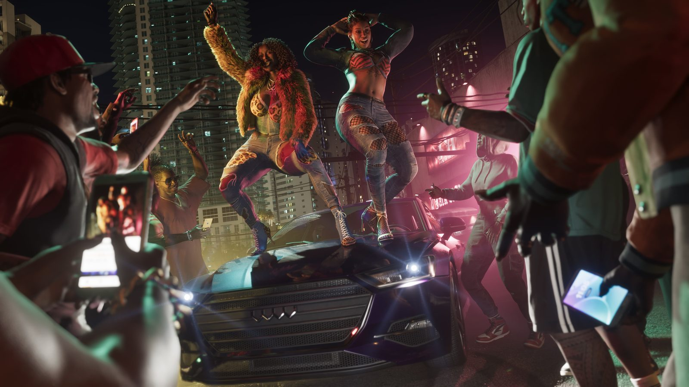
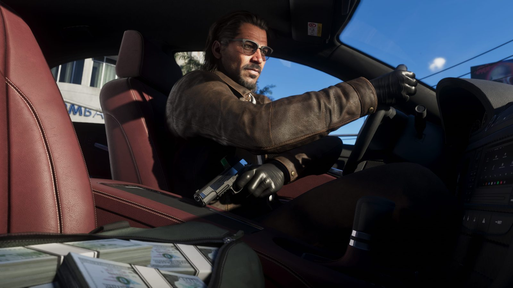
Screenshots: Rockstar Games official press resources